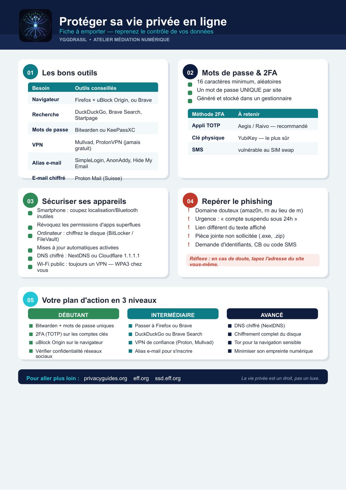

⏳ Vérification de votre niveau…

📄 Texte de la page (traduisible — les images ci-dessus restent en français)
Protéger sa vie privée en ligne Fiche à emporter — reprenez le contrôle de vos données YGGDRASIL • ATELIER MÉDIATION NUMÉRIQUE
01 Les bons outils 02 Mots de passe & 2FA 16 caractères minimum, aléatoires Besoin Outils conseillés Un mot de passe UNIQUE par site Navigateur Firefox + uBlock Origin, ou Brave Généré et stocké dans un gestionnaire
DuckDuckGo, Brave Search, Méthode 2FA À retenir Recherche Startpage Appli TOTP Aegis / Raivo — recommandé Mots de passe Bitwarden ou KeePassXC Clé physique YubiKey — le plus sûr Mullvad, ProtonVPN (jamais VPN gratuit) SMS vulnérable au SIM swap SimpleLogin, AnonAddy, Hide My Alias e-mail Email
E-mail chiffré Proton Mail (Suisse)
03 Sécuriser ses appareils 04 Repérer le phishing Smartphone : coupez localisation/Bluetooth ! Domaine douteux (amaz0n, rn au lieu de m) inutiles ! Urgence : « compte suspendu sous 24h » Révoquez les permissions d'apps superflues ! Lien différent du texte affiché Ordinateur : chiffrez le disque (BitLocker / ! Pièce jointe non sollicitée (.exe, .zip) FileVault) ! Demande d'identifiants, CB ou code SMS Mises à jour automatiques activées DNS chiffré : NextDNS ou Cloudflare 1.1.1.1 Réflexe : en cas de doute, tapez l'adresse du site Wi-Fi public : toujours un VPN — WPA3 chez vous-même. vous
05 Votre plan d'action en 3 niveaux DÉBUTANT INTERMÉDIAIRE AVANCÉ ■ Bitwarden + mots de passe uniques ■ Passer à Firefox ou Brave ■ DNS chiffré (NextDNS) ■ 2FA (TOTP) sur les comptes clés ■ DuckDuckGo ou Brave Search ■ Chiffrement complet du disque ■ uBlock Origin sur le navigateur ■ VPN de confiance (Proton, Mullvad) ■ Tor pour la navigation sensible ■ Vérifier confidentialité réseaux ■ Alias e-mail pour s'inscrire ■ Minimiser son empreinte numérique sociaux
Pour aller plus loin : privacyguides.org eff.org ssd.eff.org La vie privée est un droit, pas un luxe.